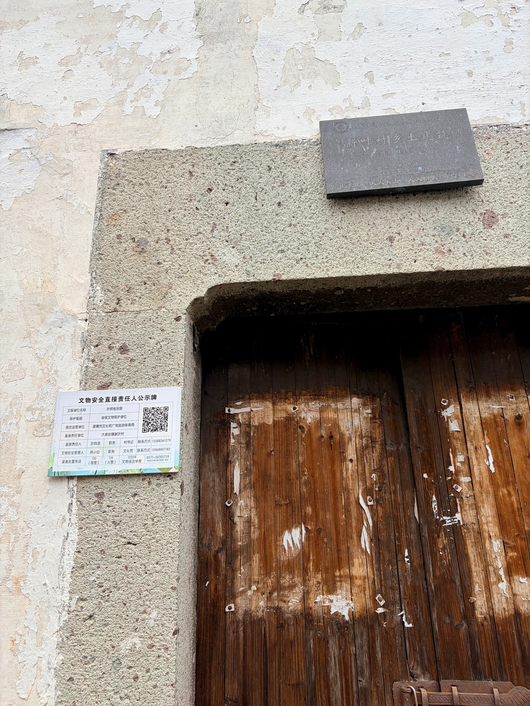
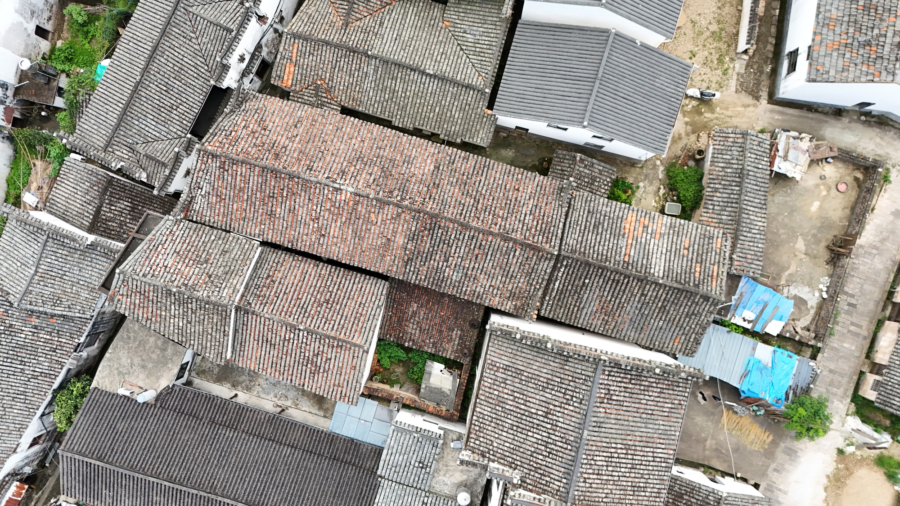

省保传统民居
一座民居的近看与俯瞰叶照桂民居
叶照桂民居是省级文物保护单位“新叶村乡土建筑”的组成部分。走近可见住宅正面，登高则能望见它与周围屋舍连成一片。
01
接近建筑正面

从街面接近，住宅正面构成最直接的外部界面。走到近处，建筑从周围屋舍中逐渐显现，也建立起人与老宅之间的近距离尺度。
02
回到连片屋面

从较高处望去，单体重新融入周围连续的屋顶。近处的门墙与远处的屋脊相互补充，让一座民居和整个古村联系起来。

叶照桂民居是省级文物保护单位“新叶村乡土建筑”的组成部分。走近可见住宅正面，登高则能望见它与周围屋舍连成一片。

从街面接近，住宅正面构成最直接的外部界面。走到近处，建筑从周围屋舍中逐渐显现，也建立起人与老宅之间的近距离尺度。

从较高处望去，单体重新融入周围连续的屋顶。近处的门墙与远处的屋脊相互补充，让一座民居和整个古村联系起来。